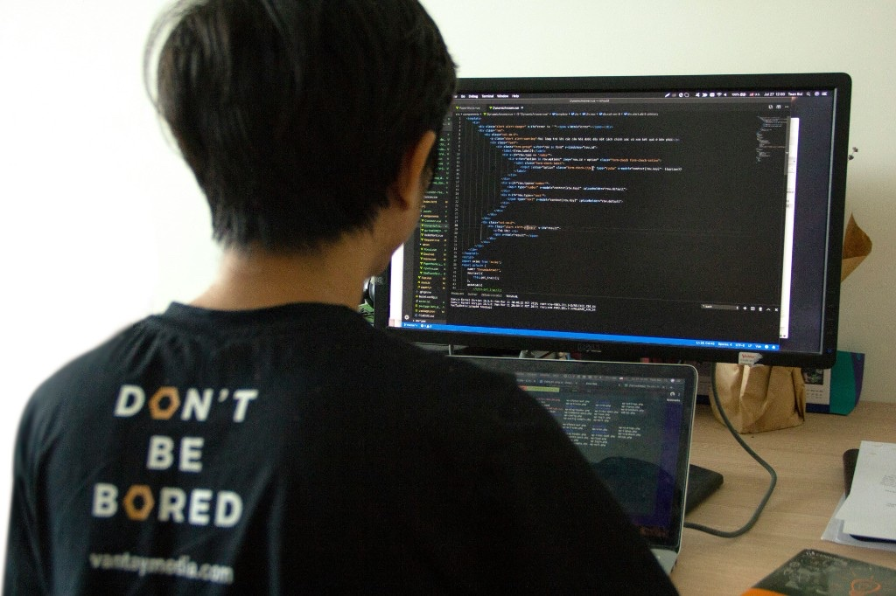

Servicios · Ensorlogs
Lo que puedo hacer por ti
Acompaño a equipos y proyectos en tecnología, datos, web e IT — y también dando talleres y cursos. Trabajo con criterio de negocio, entregables concretos y, sobre todo, documentando todo lo que hago para que tu equipo lo pueda mantener y replicar.
- Consultoría IT
- Datos & Reporting
- CRM & automatización
- Formación / Talleres
Desarrollo Web / APP
Sitios corporativos, vitrinas y aplicaciones web alineadas con tu operación: WordPress y ecosistema plugins, integraciones con CRM y herramientas de negocio, rendimiento y mantenimiento. Ideal para PropTech, retail y equipos que necesitan presencia digital fiable y evolutiva.
- WordPress y plugins
- Integraciones CRM y negocio
- Rendimiento y mantenimiento
- PropTech y retail
E-commerce
Tiendas online con WooCommerce, Shopify o PrestaShop: catálogo, pagos, envíos, integración con CRM y automatización de seguimiento comercial. Te ayudo a definir el flujo de venta y la analítica mínima para medir conversión.
- WooCommerce, Shopify, PrestaShop
- Pagos y envíos
- CRM y automatización comercial
- Flujo de venta y conversión
Marketing digital
Campañas y canales con foco medible: Google Ads, Analytics y mensajes alineados con equipos comerciales. Reporting claro para decidir presupuesto y prioridades sin humo.
- Google Ads
- Google Analytics
- Alineación con comercial
- Reporting accionable
Data Analyst
SQL, Power BI, Google Analytics y Python aplicados a reporting operativo y comercial: tableros, KPIs y datos listos para reuniones de dirección. Puente entre sistemas, hojas de cálculo y decisiones de negocio.
- SQL, Power BI, Python
- Tableros y KPIs
- Reporting operativo y comercial
- De datos a decisiones
Soporte IT / Server
Soporte para Windows y Linux; Microsoft 365, Azure, Google Workspace, automatización de workflows, CRM y soporte de infraestructura: endpoints, identidades, copias y documentación técnica para equipos que necesitan estabilidad y continuidad operativa.
- Windows y Linux
- Microsoft 365, Azure, Google Workspace
- Workflows, CRM e infraestructura
- Backups y documentación
Formación / Talleres
¿Necesitas planificar un taller, curso o programa formativo sobre tecnología? Puedo colaborar como profesor o tallerista. Vengo de la docencia universitaria, fundé CCubik —mi academia de cursos online y presenciales— y he facilitado talleres en eventos de software libre en Venezuela. Diseño contenidos, rúbricas y dinámicas a medida del nivel de tu equipo o de tu evento.
- Talleres y cursos a medida
- Docencia universitaria + CCubik
- Software libre y comunidad
- Materiales, rúbricas y mentoría